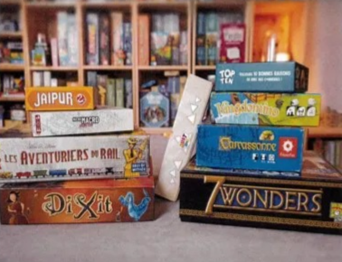
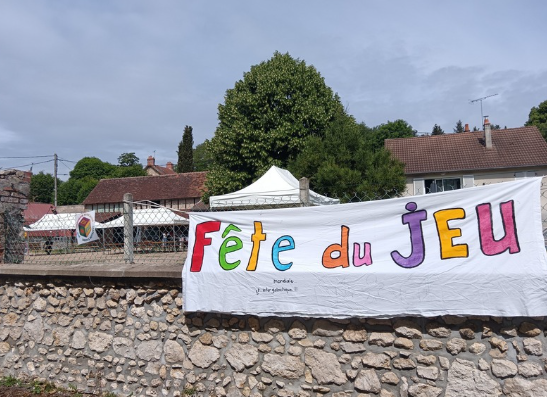
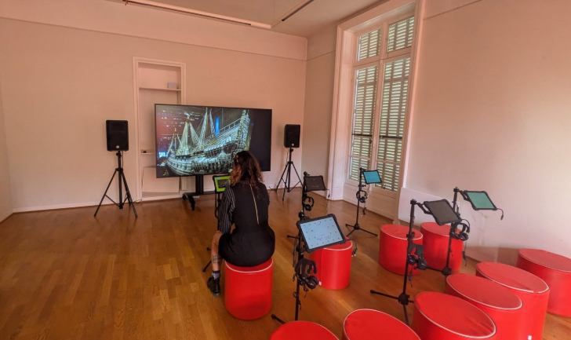
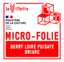
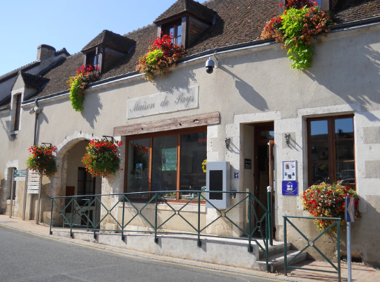

Bibliothèques
Réseau de bibliothèques de la Communauté de communes Berry Loire Puisaye
Beaulieu-sur-Loire
Mer, sam de 10h00 à 12h00
10 place de l'Église
45630 Beaulieu-sur-Loire
Bonny-sur-Loire
ar de16h00 à 18h00, merc et sam de 10h00 à 12h00 hors périodes scolaires
rue de Bicêtre
45420 Bonny-sur-Loire
Briare
Mar de 16h00 à 18h00, merc de 14h30 à 17h00, ven de 9h00 à 11h00 et sam de 14h30 à 16h30
Square Pierre Armand Thiébaut
45250 Briare
Châtillon-sur-Loire
Lun de 16h00 à 18h00, merc de 14h30 à 17h30, jeu de 10h00 à 11h30 et sam de 10h00 à 12h00
Rue du Cormier
45360 Châtillon-sur-Loire
Dammarie-en-Puisaye
Sam de 10h30 à 12h00
3 rue de la Mairie
45420 Dammarie-en-Puisaye
La Bussière
Mar, ven de 17h00 à 19h00
9, rue de Lyon
13 route de Briare
45230 La Bussière/p>
📞 02 38 35 98 92
Ousson-sur-Loire
Mar et 1er ven de 15h30 à 17h00
7 rue du 14 juillet
45250 Ousson-sur-Loire
💻 Médiathèque Départementale du Loiret - Loirétek
Ce site vous permet d’accéder 7 jours sur 7, gratuitement et légalement, à une offre de contenus en ligne répartis en huit grands espaces : musique, cinéma, livres, presse, savoirs, événement, ados et un espace sécurisé dédié aux enfants. Pour y accéder, il suffit de vous connecter et de compléter la fiche d’inscription. Une seule condition : être inscrit dans une bibliothèque et préciser celle dont vous êtes adhérent.
Saison Culturelle
Deux fois par an, la Communauté de communes Berry Loire Puisaye édite un programme des animations culturelles et spectacles de notre territoire.
Il est accessible sur son site à l’adresse suivante :
https://cc-berryloirepuisaye.fr/fr/rb/1315654/saison-culturelle-11
Associations et Clubs sportifs
De nombreuses associations sur le territoire
Pour connaître les associations et clubs sportifs présents dans votre commune, nous vous invitons à contacter directement votre mairie.
Les mairies disposent de la liste complète des associations locales et de leurs coordonnées.
Bibliothèque de Bonny-sur-Loire

Le 3ème vendredi de chaque mois à partir de 20h00 soirée jeux de société à la bibliothèque ou au Mille Clubs
Contact Maison de Pays
45250 Briare
📞 02 38 31 57 71
Jeux D Boule

Un samedi par mois pour les familles de 14h30 à 18h et le vendredi soir de 20h à minuit avant les vacances pour une soirée entre adultes, les animations ont lieu au premier étage du Centre-socio-culturel de Châtillon sur Loire
7 rue Gelée
45360 Châtillon-sur-Loire
📞 06 84 55 27 78
jeuxdboule@gmail.com / Facebook : Jeux.D.boule
Ludomobile

Ludothèque itinérante sur la Communauté de communes avec jeux de sociétés et jeux géants dont l’idée est de partager des moments conviviaux entre amis, voisins, inconnus…
Fréquence : 2 fois par mois
📞 07 57 40 10 28 / evsitinerant@laligue45.fr
Instagram : evsligue45 / Facebook : EVS-Itinérant-Berry Loire Puisaye
Bibliothèque de Bonny-sur-Loire

Le 3ème vendredi de chaque mois à partir de 20h00 soirée jeux de société à la bibliothèque ou au Mille Clubs
Contact Maison de Pays
45250 Briare
📞 02 38 31 57 71
Jeux D Boule

Un samedi par mois pour les familles de 14h30 à 18h et le vendredi soir de 20h à minuit avant les vacances pour une soirée entre adultes, les animations ont lieu au premier étage du Centre-socio-culturel de Châtillon sur Loire
7 rue Gelée
45360 Châtillon-sur-Loire
📞 06 84 55 27 78
jeuxdboule@gmail.com / Facebook : Jeux.D.boule
Ludomobile
Ludothèque itinérante sur la Communauté de communes avec jeux de sociétés et jeux géants dont l’idée est de partager des moments conviviaux entre amis, voisins, inconnus…
Fréquence : 2 fois par mois
📞 07 57 40 10 28 / evsitinerant@laligue45.fr
Instagram : evsligue45 / Facebook : EVS-Itinérant-Berry Loire Puisaye
🖥️ Micro-Folie de Briare

Musée numérique et espace culturel

loisirs_logo_micro.png
La Micro-Folie est un musée numérique gratuit et accessible à tous. Sur écran géant ou tablette, partez à la découverte de milliers d'oeuvres du monde entier.
Pilotée par la Communauté de communes Berry Loire Puisaye et la ville de Briare, la Micro-Folie proposes ateliers, conférences, expositions et animations. Accompagné par un médiateur culturel, voyagez depuis Briare vers d'autres horizons, casque de réalité virtuelle sur la tête ou tablette en main.
Horaires d'ouverture:
- Mercredi de 9h45 à 11h45 et de 13h45 à 17h45
- Jeudi de 13h45 à 17h45
- Vendredi de 13h45 à 17h45
- Samedi de 9h45 à 11h45 et de 13h45 à 17h45 Le premier dimanche de chaque mois de 13h45 à 17h45
📍 Chateau de Trousse-Barrière - 45250 Briare
📞 02 38 31 20 08
🗺️ Office de Tourisme et Baludik
Office de Tourisme de Briare
L'Office de Tourisme de Briare vous accueille pour vous informer sur les richesses du territoire :
- Patrimoine et sites remarquables
- Sentiers de randonnée
- Hébergements et restauration
- Activités et animations
📍 2 quai de l'Abbaye - 45250 Briare
📞 02 38 31 33 39

📱 Application Baludik
L'application Baludik propose des parcours de découverte ludiques et interactifs du territoire. Idéal pour explorer la région en famille !
🔍 Disponible gratuitement sur Google Play et App Store
🏛️ Patrimoine et Terroir

🏛️ Maison des Pays de Bonny
Ce qu’on aime pour les enfantsHoraires d’ouvertures : Mardi à vendredi : 09h-12h / 14h-18h Samedi : 15h-18h0 Gratuité de base pour les visites. Accessible aux personnes à mobilité réduite. Contact 29 Grande Rue 02 38 31 57 71 maisondepays@bonnysurloire.fr https://www.bonny-sur-loire.fr/associations/maison-de-pays
📍 29 Grande Rue - 45420 Bonny-sur-Loire
📞 02 38 31 57 71

🏡 Maison du Terroir et d'Animations de Beaulieu-sur-Loire
La Maison du Terroir met en valeur les richesses agricoles, artisanales et gourmandes du territoire.
Au programme :
- Dégustations de produits locaux
- Marchés thématiques
- Animations familiales
- Ateliers cuisine du terroir
📍 10 place de l'Église - 45630 Beaulieu-sur-Loire
📞 02 38 05 61 89
🌳 Squares
Espaces de jeux et de détente dans les communes du territoire

Beaulieu-sur-Loire
📍 Square de la Mairie
10 place de l'Église

Bonny-sur-Loire
📍 Square du Général de Gaulle
6 rue du Général de Gaulle

Briare
📍 Square du 8 Mai 1945
Place du 8 Mai 1945

Châtillon-sur-Loire
📍 Square de la Boyaudière
1 rue de la Boyaudière

Dammarie-en-Puisaye
📍 Square des Écoles
1 rue des Écoles

Escrignelles
📍 Place de la Mairie
13 route de Briare

Faverelles
📍 Place du Bourg
Le Bourg

Ousson-sur-Loire
📍 Square de la Mairie
6 rue de la Mairie

Thou
📍 Place du Bourg
Le Bourg

Villemurlin
📍 Place de la Mairie
Le Bourg

Neuvy-en-Sullias
📍 Place de la Mairie
Le Bourg
🏀 City-stades et Skate-parks
Équipements sportifs de plein air

Briare
📍 Complexe sportif
Rue des Sports - 45250 Briare
Terrain multisports + Skate-park

Bonny-sur-Loire
📍 Stade municipal
Rue du Stade - 45420 Bonny-sur-Loire
City-stade

Châtillon-sur-Loire
📍 Complexe sportif
Rue des Sports - 45360 Châtillon-sur-Loire
City-stade + Skate-park

Beaulieu-sur-Loire
📍 Stade municipal
Rue du Stade - 45630 Beaulieu-sur-Loire
City-stade

Dammarie-en-Puisaye
📍 Complexe sportif
Rue des Écoles - 45420 Dammarie-en-Puisaye
City-stade